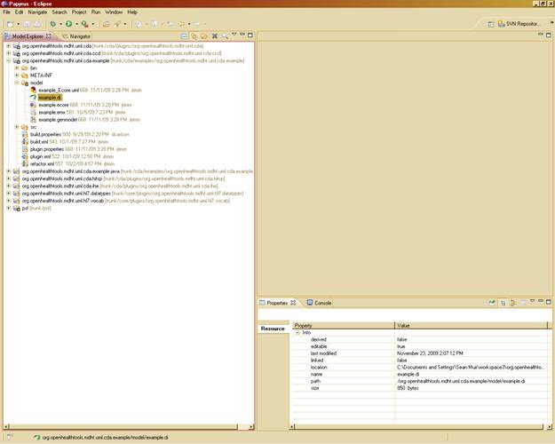
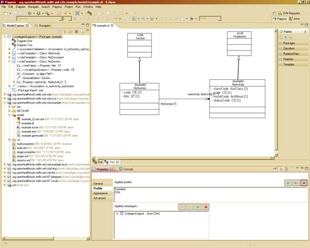
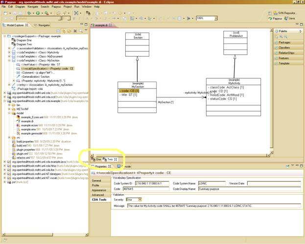
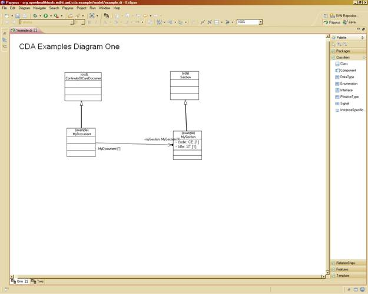
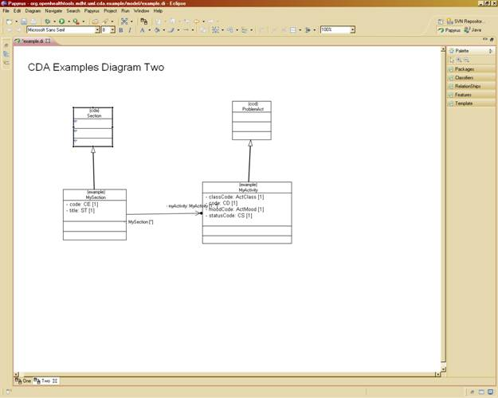
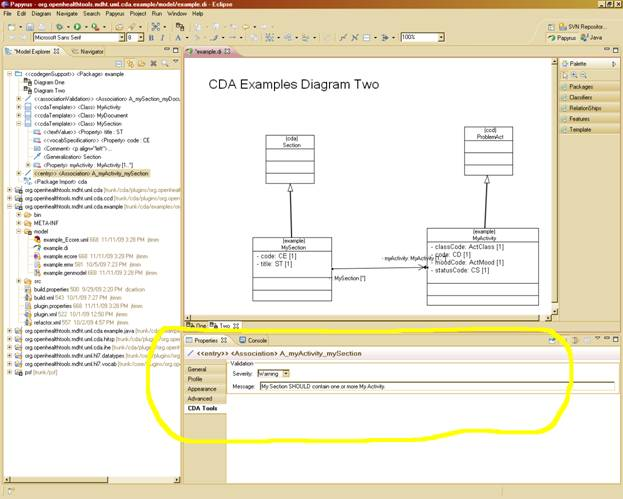
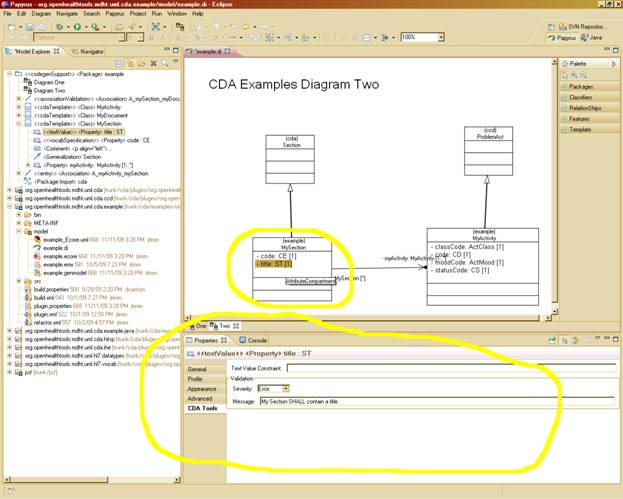

John T.E. Timm, IBM Research
David A. Carlson, Veterans Health Administration
The Modeling Health Tools (MDHT) and the Open Health Tools are dedicated to providing open source solutions with the Health Information Industry. The continuing support of the Eclipse Papyrus project is result of the ongoing effort to promote and use open source solutions.
Papyrus is an open source component of the Model Development Tools (MDT) subproject to provide an integrated, user-consumable environment for editing models based on UML. For a more complete description of the Papyrus Project please see MDT Papyrus Proposal.
The project is schedule to be officially release as part of the eclipse Helios release in June 2010, see project plan MDT Plan. As such, the current Papyrus application is still under development and is not been officially released. The MDHT project has been monitoring the Papyrus project progress and integrating at release intervals in order to test MDHT tools and provide any necessary feedback to Papyrus project.
The MDHT projects release of Papyrus is in response to demand for the CDA tooling in a 100% open source solution. As such, the MDHT project has decided to release our internal Papyrus integration build to allow early adopters and brave souls the opportunity to use the MDHT tools within the Papyrus UML environment. The MDHT Papyrus is provided as is and while we will respond to all incidents and issues resulting from using MDHT CDA tools within the environment we can not provide continual updates to the MDHT Papyrus Integration build in response to any Papyrus UML application issues or updates. We will though provide as part of our development activities release updates as necessary to the MDHT tools in response to issue within the MDHT tool set.
The purpose of this section is to describe the example project within the Papyrus application. We will illustrated some basic Papyrus features but please refer to the latest version of the Papyrus Users Guide for additional information Papyrus User Guide. The example project is available to download from the Open Health Tools MDHT site using Subversion (see How to Install CDA Models using Papyrus). For information about installation, see the Papyrus Installation Guide Papyrus Installation Guides.
After starting eclipse, switch to the Papyrus perspective using the Window->Open Perspecitve->Other option and select Papyrus from the list of perspectives. The next step is to open the project using the Model view and navigate to the Example.di file in the model subdirectory. Using the right key on the mouse pad select the Open With->Papyrus Core Editor (Should be the top option). If properly opened, a new folder will appear at the top of the Model view name example. A class diagram should appear in the main frame of the eclipse application. There are two diagrams that have been created as part of the model, one and two. You can switch between the two by selecting them in the main view table highlighted in the screen shot.



The example project contains a simple template model that further constrains the CCD (Continuity of Care Document) model. The model contains three templates: MyDocument, MySection, and MyActivity. The following class diagram captures the relationships between the MyDocument and MySection classes and classes in CCD and the base CDA model. Additionally, it displays the relationship between MyDocument and MySection. The MyDocument and MySection templates both contain the <<cdaTemplate>> stereotype. This indicates, in the diagram, that they further constraint the ClinicalDocument and Section classes, respectively, from CDA. The <<cdaTemplate>> stereotype also holds the value of the template identifier in standard HL7 OID format.

The diagram below captures the relationships between MySection and MyActivity.

These diagrams should give you a feel for the various classes, properties, and relationships in a CDA template model. You will notice that the attributes defined in MyDocument, MySection, and MyActivity mirror those defined in their parent classes from CCD and CDA. These attributes are used to further constrain the attribute definitions from the parent. For example, if a code is optional in the parent, defining an attribute with the same name and type as the parent but specifying a minimum cardinality of 1 makes the attribute required. This type of property redefinition is used during the model-to-model transformation step to generate OCL constraints that are attached to the template model classes.
Relationships between classes that specialize cda::ClinicalDocument and classes that specialize cda::Section, use directed associations to indicate a relationships between two templates in an implementation guide. This type of relationship models conformance rules such as: MyDocument SHALL contain exactly one MySection and MySection SHOULD contain one or more MyActivity Additional information about the conformance rule can be specified in property values for the <<associationValidation>>, <<entry>>, and <<entryRelationship>> stereotypes. The CDA Tools property tab is a convenient mechanism for entering such data:

The tab is context-sensitive and will only display the data fields available for the element selected in the model diagram or tree view.
Validation severity (a property of the <<associationValidation>> stereotype) is used to differentiate whether the relationship is strictly required for an instance to be considered valid. Validation severity may take on one of three possible values ERROR (strictly required, SHALL), WARNING (recommended/best practice, SHOULD), and INFO (optional, MAY).
UML properties defined in the template model are used to place further constraints on those defined in the parent template model and base CDA model. For example, MySection.code defines a fixed value for the section code using stereotype values from the <<vocabSpecification>> stereotype. The CDA Tools property tab for MySection.code is shown below. This tab can be used to specify the Code, Code System, Code System Version, etc. for a particular coded attribute.

In addition to constraints on coded attributes, structural attributes such as classCode, typeCode, and moodCode can be defined with a fixed or default value in the template model. MyActivity.classCode and MyActivity.moodCode are used to illustrate this type of constraint. Fixed or default value constraints can also be applied to attributes that use text-based datatypes such as ED or ST as illustrated by the MySection.title attribute.